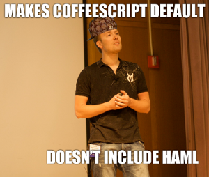
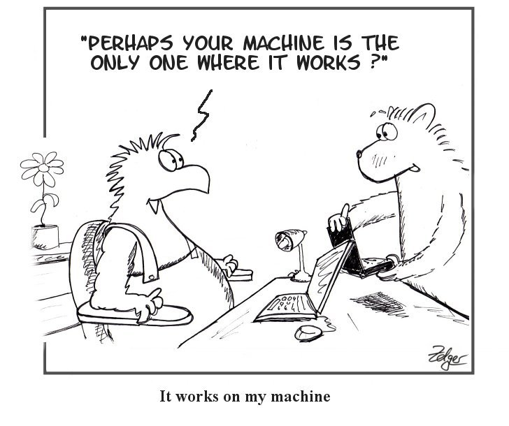

Testing your JavaScript
Sharing my experience
Dmytrii Nagirniak (~ Dima)
Believer that Software Development is an art.
Purpose
- Get you to start testing JavaScript.
- Start discussion about doing it easier.
- Contribute to
guard-rails-assets.
Outline
- Why I had to start testing.
- Options I considered in Ruby world.
- Quick set-up guide.
- Examples of the tests.
New approach to existing Idea
Volunteered to make Internet a little better world with usability in mind.Results of outsourcing
Too generic implementation that breaks the world.
Single file > 1000 LOC
Hard to maintain - all the front-end logic in a single file.SBX.common.overlays();
SBX.common.scrolledToBottom();
SBX.common.toggleButtons();
SBX.common.ajax.loading();
SBX.common.ajax.problem();
SBX.common.placeholders();
SBX.common.searchFocus();
SBX.common.notifications();
SBX.common.validation();
SBX.images.showHideInfo("Show","Hide");
SBX.images.optionsTabs();
SBX.images.navigation();
SBX.images.nextImage();
SBX.images.commentsScrolling();
SBX.images.gearEdit();
SBX.images.titleEdit();
SBX.images.tagEdit();
SBX.images.fixIE();
SBX.images.likeButton();
SBX.users.moreUsers();
SBX.users.moreHappenings();
SBX.profile.tooltips();
SBX.profile.gearAutocomplete();
SBX.profile.removeGear();
SBX.upgrade.tooltips();
SBX.upload.createUploader();
SBX.upload.progressBar();
SBX.upload.sortImages();
SBX.settings.colorpickers();
SBX.settings.inPlaceEdit();
SBX.settings.imagePreview();
SBX.settings.liveColorEdit();
Magical behaviour
 Too much magic.
Too much magic.
try {
var data = $.parseJSON(dataR);
} catch (e) {
try {
dataR = dataR.replace(/<\/?pre[^>]*>/igm,"");
data = $.parseJSON(dataR);
} catch (ex) {
$(form).trigger("server-error",[jqXHR, textStatus, ex]);
}
}
Unconditional initialisation
var moreUsers = function (){
$('.content').bind('on-bottom',function(){ /*...*/ })
},
var moreHappenings = function (){
$('.content').bind('on-bottom',function(){ /*...*/ })
}
/* etc */
// All handlers are executed as expected.
// But the interaction is NOT expected.
$('.content').trigger('on-bottom');
How to fix?
- Integration tests (Capybara >= 1.0).
- JavaScript unit testing.
- Incremental updates.
A word on Capybara
 Using Ruby to inject JavaScript for testing.
Using Ruby to inject JavaScript for testing.
A sign that the tool is used the wrong way.
Considered JS Unit-Testing options
- JavaScriptMVC
- QUnit
- Jasmine
- Selenium (1 and 2) and JsTestDriver
Tools: JavaScript
Setting everything up
Update Gemfile
# Gemfile - only shortlist - add yours of course, including execjs
group :development, :test do
gem 'jasmine'
end
group :test do
gem 'guard-coffeescript'
gem 'guard-rails-assets'
gem 'guard-jasmine-headless-webkit'
gem 'jasmine-headless-webkit', :git => 'https://github.com/johnbintz/jasmine-headless-webkit.git' # https://github.com/johnbintz/jasmine-headless-webkit/issues/10#issuecomment-1348568
end
> bundleSetup Guard
bundle exec guard init
# Guardfile
guard 'rails-assets' do
watch %r{^app/assets/.+$}
watch 'config/application.rb'
end
guard 'coffeescript', :output => 'spec/javascripts/compiled', :hide_success => true do
watch %r{^spec/javascripts/(.+\.coffee)$}
end
guard 'jasmine-headless-webkit' do
watch %r{^public/assets/application-(.*)\.js}
watch(%r{^spec/javascripts/compiled/(.*)_spec\..*}) { |m| newest_js_file("spec/javascripts/compiled/#{m[1]}_spec") }
end
Setup Jasmine
bundle exec jasmine init
You are set-up and should be able to run sample specs.
bundle exec rake jasmine:ci
Setup Jasmine: JavaScript tools
cd spec/javascripts/helpers/
wget "http://cloud.github.com/downloads/velesin/jasmine-jquery/jasmine-jquery-1.2.0.js"
wget "https://raw.github.com/pivotal/jasmine-ajax/master/lib/mock-ajax.js"
wget "https://raw.github.com/pivotal/jasmine-ajax/master/lib/spec-helper.js"
NOTE: You might need to merge spec-helper.js manually.
Setup Jasmine: configure file locations
vim spec/javascripts/support/jasmine.yml
Use wildcard as file names of assets include cache buster.
src_files:
- public/assets/first-priority-files-*.js
- public/assets/application-*.js
- public/assets/**/*.js
helpers:
- helpers/**/*.js
- compiled/helpers/*.js
spec_files:
- '**/*[sS]pec.js'
Done! Use it!
Runbundle exec guard, move the terminal away and start coding.

Example - namespaces
describe 'App', ->
someFunc = -> # empty function
describe 'export', ->
beforeEach -> App.exports 'fakeNamespace', 'module', {someFunc}
afterEach -> delete App.fakeNamespace
it 'should register namespace', ->
expect(App.fakeNamespace).toBeTruthy()
it 'should register module with functions', ->
expect(App.fakeNamespace.module.someFunc).toBe someFunc
Example - Rails CSRF with AJAX
describe 'Rails Ajax support', ->
beforeEach ->
$('head').append "<meta content='bla' class='test' name='csrf-token' />"
$('head').append '<meta content="authenticity_token" class="test" name="csrf-param" />'
App.utils.rails.init()
afterEach -> $('.test').remove()
it 'should include CSRF token from page', ->
$.get '/something'
request = mostRecentAjaxRequest() # notice AJAX is stubbed!
expect(request.url).toMatch /authenticity_token=bla/
Example - AJAX + alert + animation
describe 'comment deletion', ->
action = null
beforeEach ->
action = App.images.commentActions
action.init()
it "should remove the comment with AJAX", ->
item = $('.comments ul > li:first')
item.find('a.delete').click()
mostRecentAjaxRequest().response
status: 200
contentType: 'application/json'
responseText: '{"success": true}'
$.when(item).done ->
expect($(".comments ul.list")).not.toContain "> li"
Example - AJAX, verifying REAL-ish DOM
it "should append comment after submit", ->
$('form.comment').submit()
respond mostRecentAjaxRequest()
expect($('article.image')).toContain '.comments ul > li.just-added-fake'
expect($('article.image')).not.toContain '.comments ul ul li.just-added-fake'
Example - DOM events
it 'should trigger next on click', ->
spyOn(nav, 'onNext')
el = $('a.next:first').trigger('click')
expect(nav.onNext).toHaveBeenCalledWith el[0]
it 'should load images on last click', ->
spyOnEvent $('.content'), 'on-bottom'
$('a.next:last').trigger('click')
expect('on-bottom').toHaveBeenTriggeredOn $('.content')
Example - Inline Fixtures Factories
describe 'Imgae Info commenting', ->
beforeEach -> App.images.commenter.init()
it "should submit comment as AJAX", ->
setFixtures "
<div id=#{stringInterpolationIsUseful} class='content commenting'>
etc
</article>
</div>
"
$('form.comment').submit()
expect(mostRecentAjaxRequest()).toBeTruthy()
Example - Generating long HTML
html = ("
<div id='more#{i}' class='content-wrap'>
<div class='photo'>
<div class='image'>
<img src='data:image/gif;base64,R0lGODlhAQABAIAAAP///wAAACH5BAEAAAAALAAAAAABAAEAAAICRAEAOw=='/>
</div>
</div>
</div>
" for i in [1,3]).join "\n"
respond = (req) ->
req.response
status: 200
contentType: 'text/html'
responseText: html
# Can be used as:
respond mostRecentAjaxRequest()
Example - expectations on functions
it 'should not vote when clicking like button twice', ->
spyOn(liker, 'vote')
$('.button-like').click().click().click()
expect(liker.vote.calls.length).toEqual 1
Lessons learned: General
- Front-end dev - part of the team.
- Good UX/UI is hard.
- Rich app vs Web Site.
Lessons learned: Technical shit
- Say NO to old browsers.
- Watch out for CoffeeScript [Python is here].
- Tripple test Rails 3.1 assets compression.
- Tempting to overtest.
Existing problems
- guard-rails-assets is slow. PLZ Contribute (spork?).
- Single page tests. Clean up properly.
- Compiled specs in source control.
- Guard to compile CoffeeScript specs.
Summary
- More confidence in the project.
- Enabled fast feedback.
- Spent significantly more time.
- Still finding my way of testing things.
Recommendation
This single book will give you a great start understanding JavaScript and getting your head around testing.Thanks!

- @dnagir
- blog.ApproachE.com
- github.com/dnagir
- The rest is at ApproachE.com
This presentation is available at
dev.ApproachE.com/testing-your-javascript